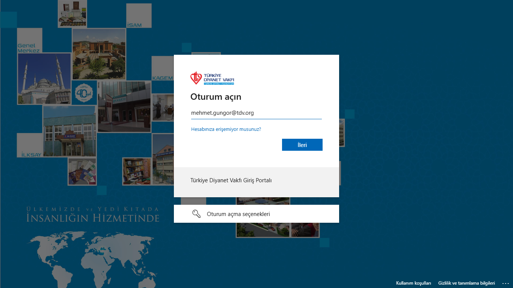
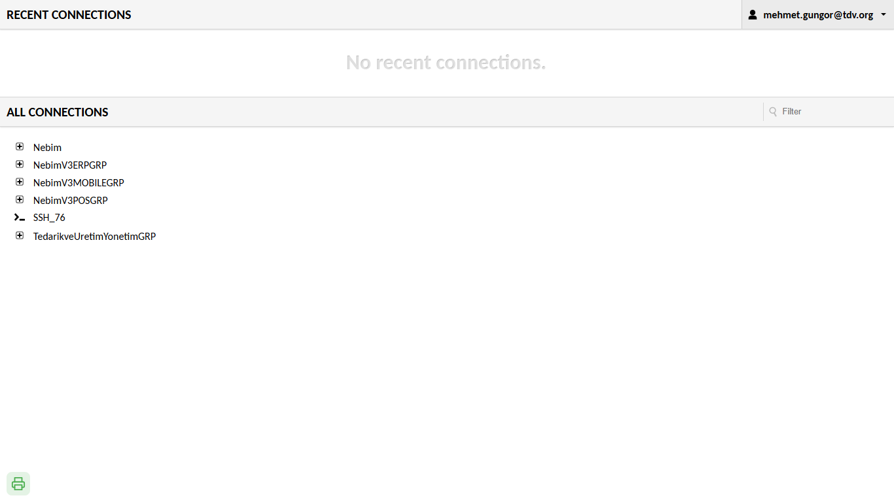
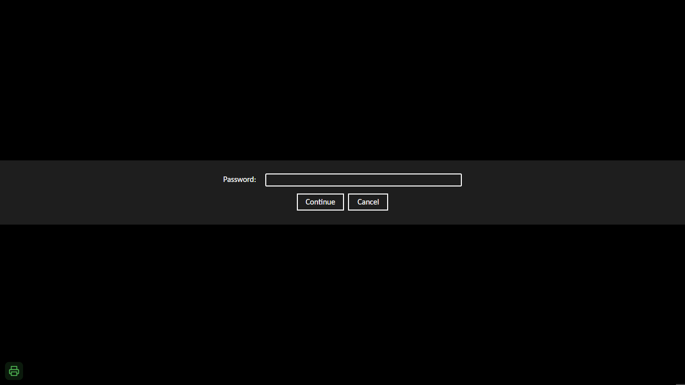
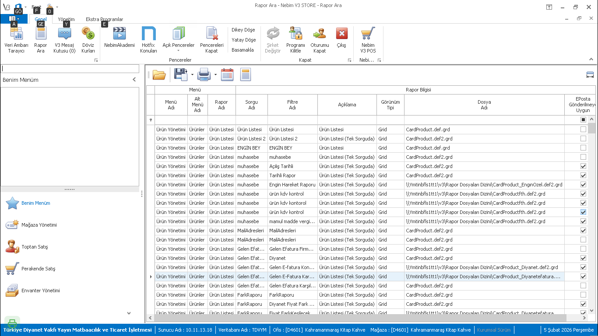
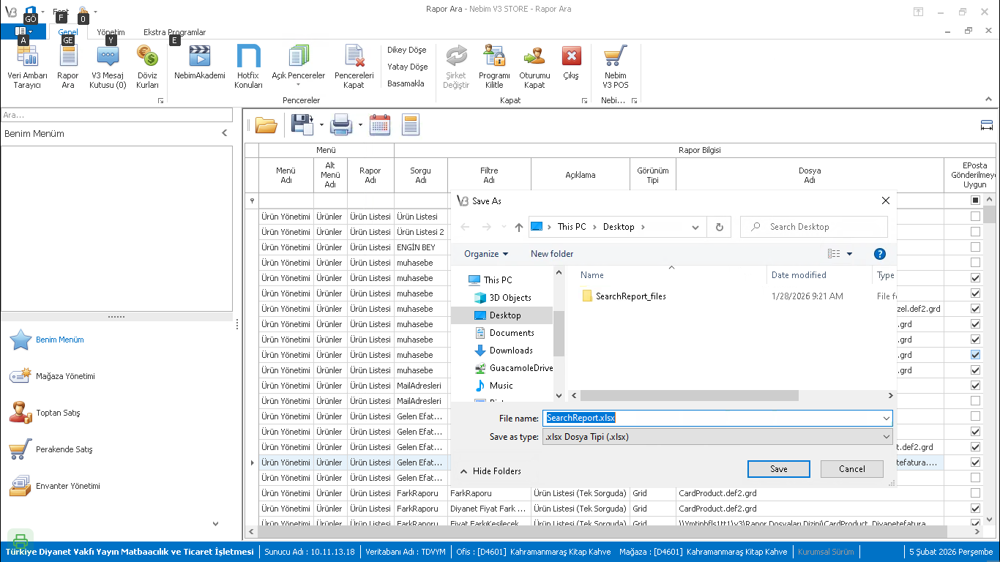
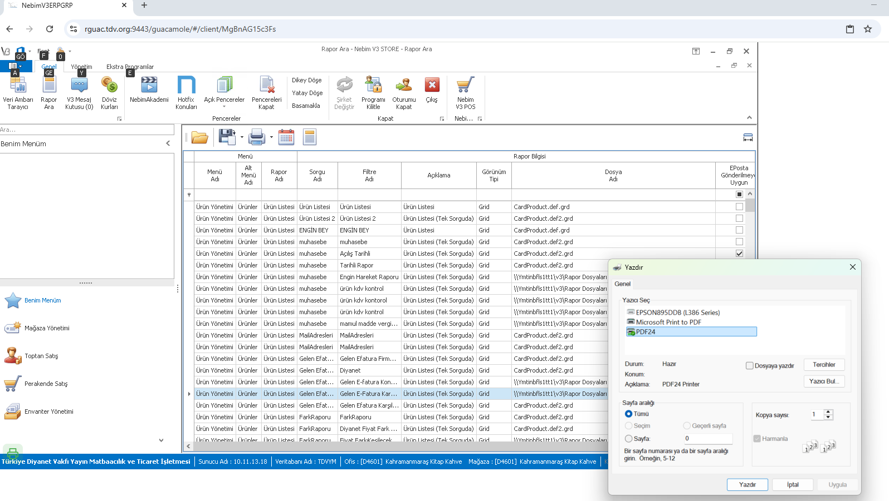

Kullanici Kilavuzu
Surum 2.2.0 — Subat 2026Guacamole Yazici Ajan, Apache Guacamole uzerinden actiginiz uzak masaustu (RDP) oturumlarindan yerel yaziciya yazdirma ve dosya indirme islemlerini kolaylastiran bir yazilimdir.
Sistem su sekilde calisir:
| Gereksinim | Aciklama |
|---|---|
| Isletim Sistemi | Windows 10 veya Windows 11 (64-bit) |
| Web Tarayici | Google Chrome, Microsoft Edge veya Firefox (guncel surum) |
| Ag Erisimi | Guacamole sunucusuna erisim: https://rguac.tdv.org:9443 |
| Yonetici Yetkisi | Kurulum icin bir kerelik yonetici (Administrator) yetkisi gereklidir |
| Port | 8181 portu yerel bilgisayarda acik olmalidir |
IT biriminizden GuacamolePrintAgent.msi dosyasini edinin
(yaklasik 65 MB). Dosyayi masaustunuze veya istediginiz bir klasore kaydedin.
GuacamolePrintAgent.msi dosyasina cift tiklayarak kurulumu baslatin.
Windows "Kullanici Hesabi Denetimi" (UAC) penceresi acilacaktir. "Evet" diyerek yonetici izni verin.
Kurulum otomatik olarak tamamlanir. Asagidaki islemler arka planda gerceklesir:
| Islem | Aciklama |
|---|---|
| Dosya kopyalama | C:\Program Files\GuacamolePrintAgent\ klasorune kurulum |
| Guvenlik Duvari | Port 8181 icin kural eklenir |
| Windows Defender | Program icin istisna eklenir |
| Otomatik baslatma | Her Windows girisi otomatik calisir |
| Ajan baslatma | Program hemen arka planda baslar |
Toplu dagitim icin komut satirindan sessiz kurulum:
msiexec /i GuacamolePrintAgent.msi /qnKurulum sonrasi ajanin hemen baslatilmasi icin:
wscript.exe "C:\Program Files\GuacamolePrintAgent\StartHidden.vbs"Web tarayicinizda asagidaki adresi acin:
https://rguac.tdv.org:9443/guacamole/#/Guacamole sizi otomatik olarak kurumsal ADFS giris sayfasina yonlendirecektir.

TDV Giris Portali - Kurumsal e-posta adresinizi girin
ADFS sayfasindan sonra Turkiye Diyanet Vakfi kimlik dogrulama sayfasina yonlendirilirsiniz. Kurumsal sifrenizi girerek oturum acin.
TDV kimlik dogrulama sayfasi - Sifrenizi girin
Basarili giris sonrasi Guacamole anasayfasini goreceksiniz. Burada size tanimli RDP baglantilari listelenir.

Guacamole anasayfasi - Baglanti listesi ve sol altta yesil yazici ikonu
Listeden istediginiz uzak masaustu baglantisina tiklayarak oturumu baslatin. RDP sunucusuna baglanmak icin sifrenizi girmeniz istenebilir.

RDP baglantisi sifre ekrani - Sifrenizi girip "Continue" tiklayin
Baglanti kurulduktan sonra uzak masaustu uygulamalarinizi kullanabilirsiniz. Dosya indirme ve yazdirma islemleri otomatik olarak yerel bilgisayariniza iletilir.

Uzak masaustunde uygulama ekrani (Nebim V3)
RDP oturumu acildiginda, tarayici penceresinin sol alt kosesinde bir yazici simgesi goreceksiniz. Bu simge, yazici ajaninin durumunu gosterir:
Ajan calisiyor, yazdirma hazir
Ajan calismiyior veya baglanti yok
Asagidaki ekran goruntusunde sol alt kosedeki yesil yazici ikonu gorulebilir:
Sol alt kosedeki yesil yazici ikonu - ajan bagli ve hazir
RDP oturumundan bir PDF dosyasi indirdiginizde veya yazdir komutunu kullandiginizda:
PDF olmayan dosyalar (Excel, Word, resim vb.) icin:

Excel dosyasi icin "Farkli Kaydet" penceresi - Masaustu veya istediginiz klasoru secin

Dosya islem secenekleri
| Dosya Turu | Uzantilar | Varsayilan Islem |
|---|---|---|
.pdf |
Yazici secim ekrani acilir | |
| Excel | .xlsx, .xls |
Farkli Kaydet penceresi acilir |
| Word | .docx, .doc |
Farkli Kaydet penceresi acilir |
| Resim | .jpg, .png |
Yazdir veya kaydet secimi |
| Metin | .txt |
Farkli Kaydet penceresi acilir |
| Arsiv | .zip, .rar |
Farkli Kaydet penceresi acilir |
Kurulumun basarili oldugundan emin olmak icin asagidaki kontrolleri yapin:
Web tarayicinizda asagidaki adresi acin:
http://localhost:8181/healthEger ajan calisiyor ise bir yanit goreceksiniz. Sayfa acilmiyorsa ajan calismiyior demektir.
Ctrl + Shift + Esc tuslariyla Gorev Yoneticisini acin.
"Ayrintilar" sekmesinde GuacamolePrintAgent.exe islemini arayin.
Guacamole sayfasinda F12 tusuna basin, "Console" sekmesine gecin. Asagidaki mesajlari gormelisiniz:
PRINT INTERCEPTION v9.0
Print agent CONNECTEDCozum:
GuacamolePrintAgent.exe islemini kontrol edinStartHidden yazip calistirin:
C:\Program Files\GuacamolePrintAgent\StartHidden.vbsKontrol Edin:
Cozum:
GuacamolePrintAgent simgesine tiklayinStartHidden.vbs calistirinCozum:
netsh advfirewall firewall add rule name="Guacamole Print Agent" dir=in action=allow protocol=TCP localport=8181Cozum: Asagidaki dosyayi yonetici olarak calistirin:
"C:\Program Files\GuacamolePrintAgent\DefenderSetup.bat"msiexec /x GuacamolePrintAgent.msi /qn